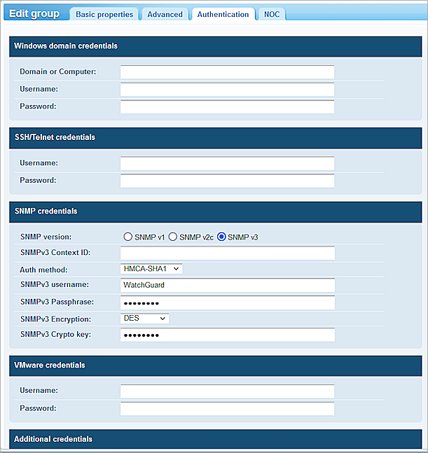
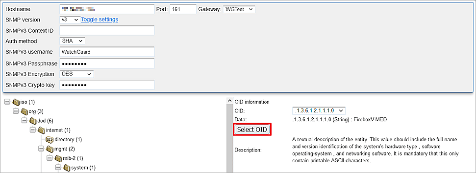

Kaseya VSA is an RMM (Remote Monitoring and Management) tool used commonly among MSPs (Management Service Providers). RMM agents are installed on MSP customer endpoints to discover IT assets and remotely monitor and manage them.
This document describes how to use Kaseya VSA to discover and monitor a WatchGuard Firebox.
Platform and Software
The hardware and software used to complete the steps outlined in this document include:
- Firebox installed with Fireware v12.8.2 or higher
- Kaseya version VSA 9.5.14 (web login)
- Probe installed on Windows 10 Education
Test Topology and Workflow
This diagram shows the test topology used in this integration:

Set Up the Firebox
You must configure the SNMP settings on the WatchGuard Firebox before you use Kaseya VSA to discover it.
To configure the SNMP settings on the Firebox:
- Log in to Fireware Web UI (https://<your Firebox IP address>:8080).
- Select System > SNMP.
- From the Version drop-down list, select v3.
- From the Authentication Protocol drop-down list, select SHA1.
- In the Password and Confirm text boxes, type the authentication password.
- From the Privacy Protocol drop-down list, select DES.
- In the Password and Confirm text boxes, type the encryption password.
- In the User Name text box, type WatchGuard.
- Keep other settings as the default values.
- Click Save.
- Select Firewall > Firewall Policies.
- Add an SNMP packet filter policy for traffic from Any-Trusted to Firebox.
If you connect to an optional interface, specify Any-Optional instead of Any-Trusted.
Set Up Kaseya
Deploy an Agent
To deploy an agent:
- Log in to Kaseya VSA as an administrator.
- Download and install the Kaseya Agent on a probe computer. This computer must be in a LAN that connects to the WatchGuard Firebox.
Each installed agent is assigned a unique VSA machine ID/group ID/organization ID. The Machine ID can be created automatically at the agent install time or individually prior to the agent installation.
- In the left navigation bar, select Discovery > Networks > By Agent.
The Probe computer shows on this page.
Create a New Network
To create a new network:
- In the left navigation bar, select Discovery > Networks > By Network.
- Click New to add a new network.
- In the Network Name text box, type your network name.
- In the Probe* text box, select the probe agent you deployed in the Deploy an Agent section.
- In the IP Scan Range text box, type the range of IP addresses include the probe machine and Firebox.
- By default, the entire scan range configured for a network is specified. Example: 192.168.32-35.0-255
- Multiple IP ranges separated by commas are supported. Example: 192.168.32-35.0-255, 10.10.14-15.0-255
- (Optional) In the IP Exclusions text box, type the exclusive IP address range.
- In the Organization* drop-down list, select your organization.
- Select the Alerts Active check box.
- Select the Monitor Network check box.
- Select the SNMP tab.
- Select the Enable SNMP check box.
- Keep the Community String text box empty.
- Click Save.
Set Up SNMP Credentials
To set up SNMP Credentials:
- In the left navigation bar, select Network Monitor > Monitoring > View > group (KNM).

- Click Edit.

- Select the Authentication tab.
- For SNMP version, select SNMP v3.
- Configure the same SNMP authentication method, encryption method, and credentials that you configured in the Set Up the Firebox section.
- Click Save.
- To start the scan, select Discovery > Networks > By Network > Scan Now.
- To see discovered devices, select Discovery > Summary > Discovered Devices . In this example, The Fireboxes were discovered because the Firebox on this LAN is configured with SNMP enabled.
To install the gateway, make sure the discovered devices have the same Network as the Probe agent .
- Select the Firebox. Click Make Asset.
Install the Gateway
To install the gateway:
- In the left navigation bar, select Network Monitor > Monitoring > View .
-
Select Gateway (WGTest).
- Select Install Gateway.
- From the Select Agent drop-down list, select the agent probe you deployed in the Deploy an Agent section.
- Click Save.
When the gateway installation completes, the Monitoring > View panel shows green check marks.
Apply the Template and Add Monitors
To apply the template and add monitors:
- In the View panel, select the Firebox.
- In the Commands section, click Apply Template.

- Select the WatchGuard XTM template.
- Click Proceed.
The new attributes show for the Firebox.
- Select the Firebox.
- In the Commands section, click Add new monitor.
- Select SNMP > SNMP > Add monitor.
- Configure the Object Identifier (OID). You can type the OID or select it from the MIB tree. If the OID value is a string, from the Value type drop-down list, select Text.

- Click Save.
- Add two SNMP monitors:
- XTM Device Model: OID .1.3.6.1.2.1.1.1.0
- XTM Device Name: OID .1.3.6.1.2.1.1.5.0
For more information about Firebox MIB objects, see Enterprise MIB File Details in Fireware Help.
SNMP monitors information appears on the Monitors tab for the monitored device.
Rename a discovered device
Because of security programs or the firewall configuration, Kaseya VSA might set the name of the discovered device to unknown-MAC address.
To rename a device:
- In the left navigation bar, select Discovery > Summary > Discovered Devices.
- Select the device.
- Select Rename Device.
The new device name shows in Network Monitor.